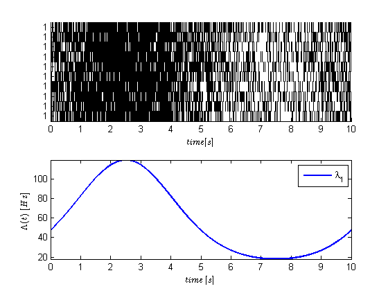
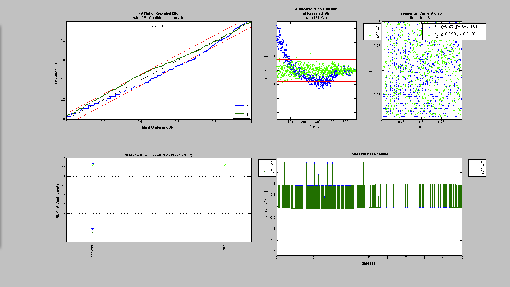
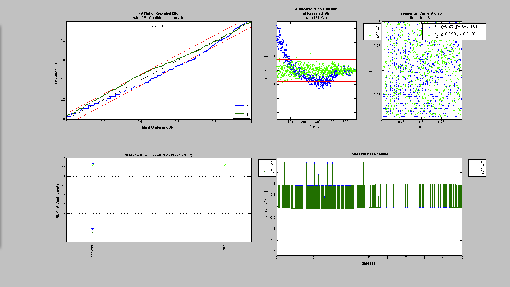

STIMULUS DECODING
In this example we show how to decode a univariate and a bivariate stimulus based on a point process observations using nSTAT. Even though due to the simulated nature of the data, we know the exact condition intensity function, we estimate the parameters before moving on to the decoding stage.
Contents
Generate the conditional Intensity Function
close all; delta = 0.001; Tmax = 10; time = 0:delta:Tmax; f=.1; b1=1;b0=-3; x = sin(2*pi*f*time); expData = exp(b1*x+b0); lambdaData = expData./(1+expData); lambda = Covariate(time,lambdaData./delta, '\Lambda(t)','time','s','Hz',{'\lambda_{1}'},{{' ''b'', ''LineWidth'' ,2'}}); numRealizations = 10; spikeColl = CIF.simulateCIFByThinningFromLambda(lambda,numRealizations); figure; subplot(2,1,1); spikeColl.plot; subplot(2,1,2); lambda.plot;
Fit a model to the spikedata to obtain a model CIF
stim = Covariate(time,sin(2*pi*f*time),'Stimulus','time','s','V',{'stim'}); baseline = Covariate(time,ones(length(time),1),'Baseline','time','s','',... {'constant'}); figure; cc = CovColl({stim,baseline}); trial = Trial(spikeColl,cc); trial.plot; clear c; selfHist = [] ; NeighborHist = []; sampleRate = 1000; c{1} = TrialConfig({{'Baseline','constant'}},sampleRate,selfHist,... NeighborHist); c{1}.setName('Baseline'); c{2} = TrialConfig({{'Baseline','constant'},{'Stimulus','stim'}},... sampleRate,selfHist,NeighborHist); c{2}.setName('Baseline+Stimulus'); cfgColl= ConfigColl(c); results = Analysis.RunAnalysisForAllNeurons(trial,cfgColl,0); figure; results{1}.plotResults; Summary = FitResSummary(results); paramEst = squeeze(Summary.bAct(:,2,:)); meanParams = mean(paramEst,2);
Analyzing Configuration #1: Neuron #1,2,3,4,5,6,7,8,9,10 Analyzing Configuration #2: Neuron #1,2,3,4,5,6,7,8,9,10
 
 So we now have a model for lambda lambda = exp(b_0 + b_1*x(t))./(1+exp(b_0 + b_1*x(t)) * 1/delta because exp(b_0 + b_1*x(t))<<1 we can approximate this lambda by just the numerator i.e. lambda = exp(b_0 + b_1*x(t))./delta
Now suppose we wanted to decode x(t) based on only having observed lambda
clear lambdaCIF; b0=paramEst(1,:); b1=paramEst(2,:); for i=1:numRealizations % Construct a CIF object for each realization based on our encoding % results abovel lambdaCIF{i} = CIF([b0(i) b1(i)],{'1','x'},{'x'},'binomial'); end % close all; spikeColl.resample(1/delta); dN=spikeColl.dataToMatrix; % Make noise according to the dynamic range of the stimulus Q=2*std(stim.data(2:end)-stim.data(1:end-1)); A=1; [x_p, W_p, x_u, W_u] = DecodingAlgorithms.PPDecodeFilterLinear(A, Q, dN',b0,b1,'binomial',delta); figure; zVal=3; ciLower = min(x_u(1:end)-zVal*squeeze(sqrt(W_u(1:end)))',x_u(1:end)+zVal*squeeze(sqrt(W_u(1:end)))'); ciUpper = max(x_u(1:end)-zVal*squeeze(sqrt(W_u(1:end)))',x_u(1:end)+zVal*squeeze(sqrt(W_u(1:end)))'); hEst=plot(time,x_u(1:end),'b',time,ciLower,'g',time,ciUpper,'g'); hold on; hold all; hStim=stim.plot([],{{' ''k'',''Linewidth'',2'}}); legend off; legend([hEst(1) hEst(2) hEst(3) hStim],'x_{k|k}(t)',strcat('x_{k|k}(t)-',num2str(zVal),'\sigma_{k|k}'),... strcat('x_{k|k}(t)+',num2str(zVal),'\sigma_{k|k}'),'x_{k|k}(t)','x(t)'); title(['Decoded Stimulus +/- 99% confidence intervals using ' num2str(numRealizations) ' cells']);
Warning: Ignoring extra legend entries.